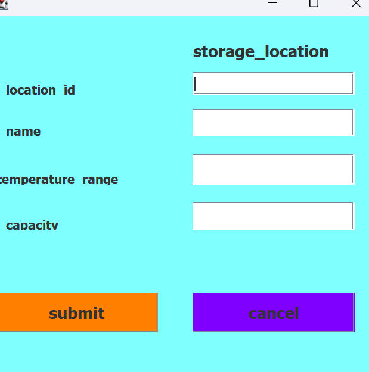
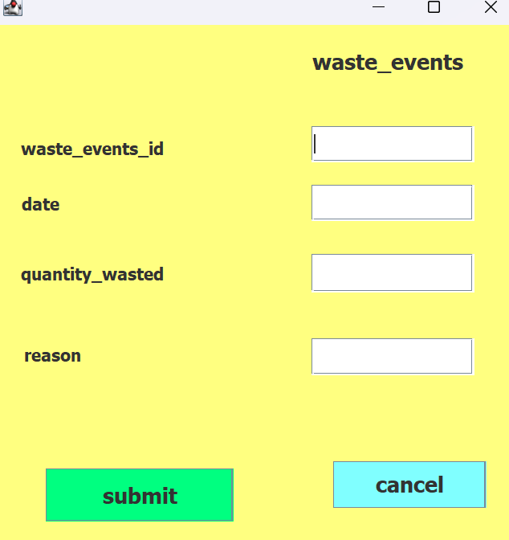
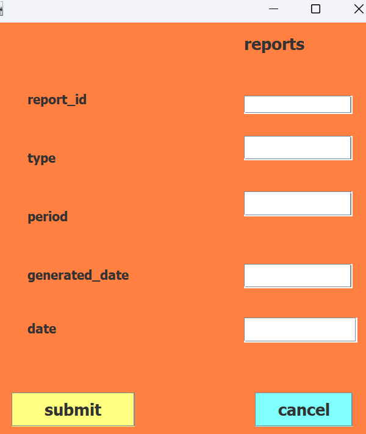

- DATABASE
FOOD WASTAGE REDUCTION MANAGEMENT SYSTEM
Database name used: .
- Tables
- food inventory table
- storage location table
- waste events table
- waste prevention measures table
- report table
- Attributes
- Attributes of Food inventory table Here are the descriptions or purposes of the attributes/columns used in food inventory table:
food id: The column serves as a unique identifier for each food item in the inventory.it allows for easy referencing and tracking of specific food items.
name: The column provides a description of the food items, allowing users to quickly identify the type of food in the inventory.
expire date: The column records the expiration date of each food item,enabling the system to generate alerts or notifications when items are nearing or have exceeded their expiration date.
purchase date: The column stores the date when the food item was inquired.
quantity: The column tracks the number of each food item in stock.
Password: The inclusion of a password column seems unusual for a food inventory table typically a password column is not directly related to inventory management. however in management system it could be needed to secure the system.
- Attributes of Storage location table Here are the descriptions or purposes of the attributes/columns used in storage location table:
location id: The column is the unique identifier for the storage location.
Name: The column which are represents the name or description of the stolage location.
Temperature_range: The column which are represents the range of temperatures within which the storage location can mantain its contents .
capacity: The columns which represents the maximum amount of items or materials that the storage location can hold.
- Attributes of waste events table Here are the descriptions or purposes of the attributes/columns used in waste events table:
waste_events_Id: waste events id a unique dentifier for each waste event.
date: The column which are represents date when the waste events occured.
quantity_wasted: The column which are represents the amount of waste generated in the event.
reason: The column whith explanation of the waste generated event.
- Attributes of Waste prevention measures Table Here are the descriptions or purposes of the attributes/columns used in Waste prevention measures Table:
measure_Id: The column is the unique identifier for each waste prevention measure..
name: The column which are represents the description name of the waste prevention measure.
Target location: The column which are represents the area or department where the measure is implemented.
target food cartegory: The column which are represents the specific food items targeted by the measure.
implementation date: The column which are represents the date when the measure is put into effort.
responsible person: The column which represents the individual or team responsible for implementing and overseeing the measure.
- Attributes of Report table Here are the descriptions or purposes of the attributes/columns used in Report table:
report_Id: The column which is the unique identifier of each report.
Type: The column which are represents the cartegory or purpose of the report,eg financial,operational,or sales.
Period: The column which are represents the timeframe or duration the report covers,such as monthly or quaterly.
Generated date: The column which are represents the date the report was created or generated.
date: The column which are represents the specific date of the report,impling the time period it covers.
. Food Inventorytable in the project would involve creating a comprehensive food inventory system. This would include cataloging and tracking all food items, including quantities, expiration dates, and storage locations..
Storage Location table would also incorporate a feature to document and manage the storage locations of food items. This would ensure that inventory is organized and easily accessible, reducing the likelihood of items expiring or becoming unusable due to poor storage.
on Waste Events table would track and record any instances of food wastage, including the reasons for the wastage and the specific food items involved. This would allow for analysis and identification of recurring issues.
Waste Prevention Measures: Based on the data collected from waste events, the system would facilitate the implementation and tracking of waste prevention measures. This could include initiatives to reduce over-purchasing, improve storage practices, or optimize food usage in the kitchen.
7 Report: The project would generate regular reports on food inventory, waste events, and the effectiveness of waste prevention measures. These reports would provide valuable insights for decision-making and planning future strategies.
- JAVA PROGRAMMING
- Description
Eclipse IDE: an integrated development environment used in computer programming. It contains a base workspace and an extensible plug-in system for customizing the environment. It is the second-most-popular IDE for Java development, and was the most popular.
JAR stands for Java Archive: It's a file format based on the popular ZIP file format and is used for aggregating many files into one. Although JAR can be used as a general archiving tool, the primary motivation for its development was so that Java applets and their requisite components.
- Forms and Images
FOOD INVENTORY Form :The first step in the project would involve creating a comprehensive food inventory system. This would include cataloging and tracking all food items, including quantities, expiration dates, and storage locations.

STORAGE LOCATION :The system would also incorporate a feature to document and manage the storage locations of food items. This would ensure that inventory is organized and easily accessible, reducing the likelihood of items expiring or becoming unusable due to poor storage.
waste events :The system would track and record any instances of food wastage, including the reasons for the wastage and the specific food items involved. This would allow for analysis and identification of recurring issues.
waste prevention measures : Based on the data collected from waste events, the system would facilitate the implementation and tracking of waste prevention measures. This could include initiatives to reduce over-purchasing, improve storage practices, or optimize food usage in the kitchen.

reports :The project would generate regular reports on food inventory, waste events, and the effectiveness of waste prevention measures. These reports would provide valuable insights for decision-making and planning future strategies.

IntroductionIn this chapter I will be describing how powerful generalpurpose programming language was used to create the analyzed system. Under this chapter I will undergo full detail of how everything will function together with database that have been describe above and how it cope with full analyzed system.
Tools used to develop this system in java programming
MySQL Connectors: MySQL provides standards-based drivers for JDBC, ODBC, and .Net enabling developers to build database applications in their language.